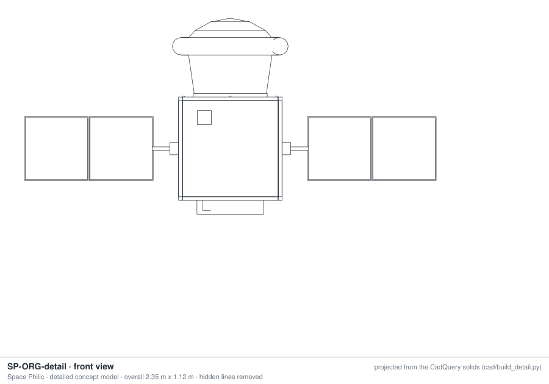
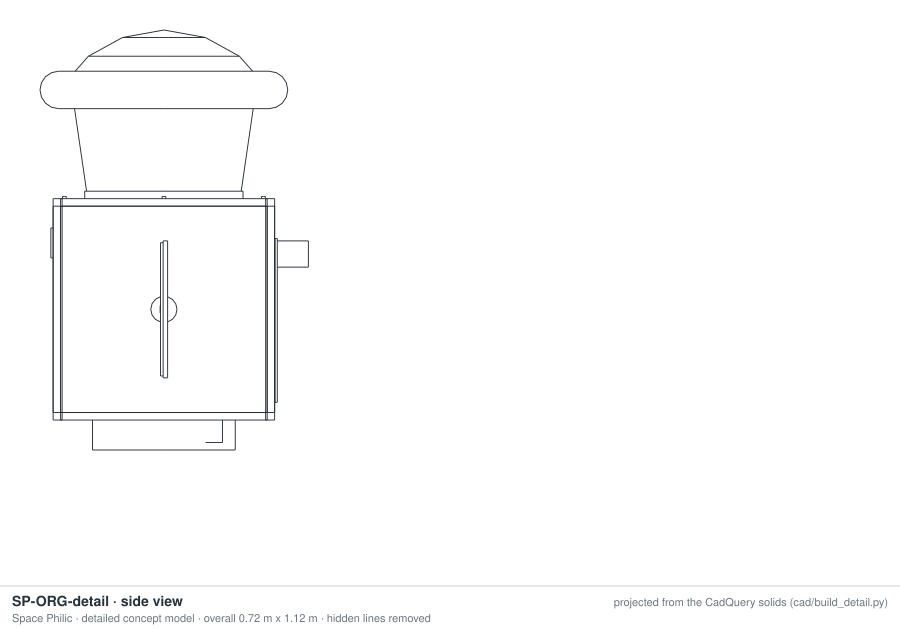
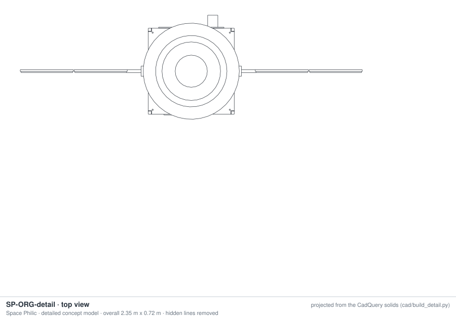

A SATELLITE PER EXPERIMENT
Fifteen dedicated free-flyers, designed around what each experiment brings home
Each experiment's own satellite follows from one question: what must come back? 14 bring back only their samples, so the microscope, pumps and any furnace or centrifuge stay in the service module and burn up. 1 brings its cells home alive in a powered capsule. Where the science can be read in orbit, a CubeSat with no capsule is an option: the antibiotic-resistance assay already flew that way. All are sized by one reviewed model and drawn to scale from its numbers.
What the designs say
- The capsule sets the size. No capsule much smaller than about 45 kg has been recovered yet (40-44 kg ones flew but were not recovered; Varda's, under 90 kg, was), so bringing back about 2 kg of samples takes a 115 to 137 kg satellite: 38 to 69 kg of satellite per kg of samples.
- That is the case for sharing the capsule. LELP-1 brings 32 bays home in one capsule, the whole lab, at about 7.6 kg of lab per bay. A dedicated free-flyer makes sense when an experiment needs what a bay cannot give: a metallic furnace (about 200 W during melt-back), a 1 g centrifuge beside the samples, the schedule to itself, or a quieter ride with no robotic arm.
- When the science is read in orbit, skip the capsule: NASA's EcAMSat, a 6U CubeSat of 10.7 kg, flew the antibiotic-resistance assay in 2017. It gives the in-flight readout only; plating, sequencing and the other lab assays need the samples back.
- All capsule designs use one capsule size and one service-module family: a common bus with experiment-specific payload decks is the product line.
CAD
Every design as a 3-D model, generated from its numbers by a parametric CadQuery model: tank from the propellant, battery from its energy, panels from the cell area, capsule from its mass. Download STEP for engineering or GLB for viewing.
CAD generated by cad/build_cad.py (CadQuery, OpenCascade kernel) from the sizing numbers: concept geometry, not a released design.
Detailed engineering model: SP-ORG
The common sample-return bus in detail, on the stem-cell organoid satellite: 20 mm honeycomb decks and side panels, a CFRP thrust tube from the separation ring to the top deck with the propellant tank on an equator ring inside it, corner longerons, 6 unit brackets, 16 deck fasteners and 62 harness runs from the on-board computer to every unit. Pick "SP-ORG detailed engineering model" above for the cutaway (the -Y panel left off); the STEP has every part. The drawings below are projected straight from the solids.



The fifteen designs, to scale
Numbers
| Satellite | Arch | Samples home kg | Capsule kg · Ø | Service module kg | Array | Battery Wh | Launch kg | Extra |
|---|---|---|---|---|---|---|---|---|
| SP-ORGStem-cell organoids | B | 1.7 | 45 · 1.17 m | 62 | 128 W | 241 | 117 | - |
| SP-XTLProtein crystallization for drug formulation | B | 2.2 | 45 · 1.17 m | 61 | 125 W | 241 | 116 | - |
| SP-AMRAntibiotic resistance of pathogenic bacteria | B | 2.2 | 45 · 1.17 m | 62 | 128 W | 241 | 117 | - |
| SP-PLTSeed germination and root growth | B | 1.9 | 45 · 1.17 m | 62 | 120 W | 241 | 117 | grow light |
| SP-ALYAlloy solidification | B | 1.4 | 45 · 1.17 m | 98 | 256 W | 605 | 156 | furnace, X-band |
| SP-BRXBioreactor for tissue engineering and biomanufacturing | B | 2.2 | 45 · 1.17 m | 61 | 120 W | 241 | 116 | - |
| SP-CHIPMicrofluidic lab-on-a-chip and organ-chips | B | 2.4 | 45 · 1.17 m | 66 | 145 W | 241 | 122 | X-band |
| SP-MECHCell mechanobiology: how cells sense gravity and load | B | 2.5 | 45 · 1.17 m | 82 | 191 W | 350 | 140 | 1 g centrifuge, X-band |
| SP-BFMBiofilm formation on spacecraft and medical materials | B | 2.4 | 45 · 1.17 m | 62 | 128 W | 241 | 117 | - |
| SP-ALGMicroalgae and cyanobacteria for oxygen and food | B | 2.8 | 45 · 1.17 m | 60 | 128 W | 241 | 115 | grow light |
| SP-HRTHuman heart muscle cells from stem cells | C | 3.1 | 45 · 1.17 m | 63 | 146 W | 241 | 118 | X-band |
| SP-IMMImmune T-cell activation | B | 3.6 | 45 · 1.17 m | 76 | 179 W | 350 | 133 | 1 g centrifuge |
| SP-BONEBone cells: resorption and mineralization | B | 1.9 | 45 · 1.17 m | 63 | 128 W | 241 | 118 | - |
| SP-WORMC. elegans muscle and ageing | B | 2.3 | 45 · 1.17 m | 80 | 208 W | 350 | 137 | X-band |
| SP-ONC3D tumour spheroids for drug testing | B | 2.0 | 45 · 1.17 m | 62 | 128 W | 241 | 118 | - |
How they are sized
Architecture and what returns come from catalog/freeflyer_arch.yaml, checked against each experiment's protocol. In B the capsule carries only the sample carriers plus a drawer with an optical window, dry-break fluid couplings and a small thermoelectric block; in C it carries the culture system. Payload power = module peak + a 25 W thermoelectric block per culture (average 60% of peak + 12 W). Array = margin × Pavg × (f/Xe + (1 − f)/Xd) / (1 − f), the SMAD form with Xd 0.8, Xe 0.6, at the worst eclipse fraction f of the 550 km dawn-dusk orbit and the aphelion-season flux. Battery = the largest of the eclipse case, 3.5 h of ascent, a time-stepped furnace run and a 100 Wh minimum. Capsule = max(45 kg, (what returns + drawer + avionics + thermal + an 8 h hold battery) / (1 − heat shield − recovery − structure fractions) × (1 + margin)); diameter D = √(4m / (π CD β)) at LELP-1's ballistic coefficient. Service module = (the experiment hardware that stays + bus items + propulsion) × (1 + margin), with structure and harness fractions; propellant from the rocket equation for 190 m/s with the capsule attached; enough 22 N thrusters to finish within a tenth of an orbit.
| Parameter | Value |
|---|---|
| solar_const_w_m2 | 1318 |
| cell_eff | 0.29 |
| packing | 0.85 |
| temp_loss | 0.92 |
| array_w_per_kg | 30 |
| xd | 0.8 |
| xe | 0.6 |
| power_margin | 1.25 |
| batt_wh_per_kg | 150 |
| dod_cycling | 0.4 |
| dod_once | 0.8 |
| ascent_h | 3.5 |
| discharge_eff | 0.9 |
| bus_avg_w | 30 |
| bus_peak_w | 60 |
| xband_avg_w | 8 |
| obc_radio_kg | 3 |
| xband_kg | 2 |
| adcs_kg | 3 |
| thermal_kg | 1 |
| thermal_kg_per_w | 0.01 |
| launch_if_kg | 1 |
| sep_kg | 1.5 |
| struct_frac | 0.18 |
| harness_frac | 0.05 |
| tec_peak_w | 25 |
| tec_avg_w | 12 |
| payload_duty | 0.6 |
| dv_ms | 190 |
| isp_s | 215 |
| thrust_n | 22 |
| prop_dry_fixed_kg | 7.5 |
| prop_dry_frac | 0.25 |
| cap_avionics_kg | 2.5 |
| cap_thermal_kg | 1 |
| cap_avionics_w | 8 |
| return_hold_h | 8 |
| f_tps | 0.22 |
| f_recovery | 0.1 |
| f_cap_struct | 0.18 |
| system_margin | 0.2 |
| drawer_kg | 0.5 |
| drawer_tec_kg | 0.6 |
| drawer_tec_avg_w | 5 |
| transfer_kg | 1 |
| cap_min_kg | 45 |
| beta_kg_m2 | 26 |
| cd | 1.6 |
| payload_offset_m | 0.3 |
| density_kg_m3 | 3e-13 |
| density_high_kg_m3 | 1.5e-12 |
| cd_body | 2.2 |
| body_area_m2 | 0.3 |
Model: sentinel/lelp/freeflyer.py; drawings: concept geometry from the same numbers.
Independent review and caveats
Three independent reviews checked the model: the physics and maths, every parameter against published sources, and the designs as a spacecraft systems engineer would. All three found it sound with fixes, and the fixes are in: array sizing with separate daylight and eclipse path efficiencies (SMAD, peak-power tracking) at the aphelion-season solar flux, a 20 % system margin, heavier capsule fractions, a 3.5 h ascent hold, an 8 h capsule hold, a delta-v reserve, a propulsion module sized like a flown green-monopropellant unit, a thrust-limited deorbit burn, a time-stepped furnace battery case and a counter-rotor for the centrifuge designs. The deorbit delta-v, the eclipse geometry, the capsule-diameter relation and the microgravity formulas were confirmed. A second round (October 2026) changed the designs themselves: each experiment's satellite now follows from what must come back (architecture A, B or C), checked against every catalog entry by an independent reviewer, and the capsule was calibrated against real small capsules, which raised it to a 45 kg floor.
- The capsule is the floor. The smallest sample-return-class capsules that have flown, The Exploration Company's Nyx Bikini (40 kg, 0.6 m) and Inversion Space's Ray (44 kg), were not recovered; the smallest recovered one we could confirm is Varda's W-1 capsule, under 90 kg and about 0.9 m. Our designs use a 45 kg capsule; treat it as unproven until a capsule that small is recovered.
- JAXA's HTV Small Re-entry Capsule (2018, under 180 kg, 0.84 m) brought samples home cold in a Tiger vacuum-insulated container, 4 ± 2 °C for 5 days 15 hours. A second-generation container holds 20 ± 2 °C for at least 12 days at no more than about 4.7 kg. Containers like these suit the courier leg after recovery.
- In architecture B the microscope images the samples through an optical window from the service module. That is the weakest link, because an inverted microscope's working distance and resolution suffer through a window across a separable interface. It is an open design question, not a solved design.
- Dry-break fluid couplings that part at separation are a BSL-2 containment boundary (and a cytotoxic-drug boundary for tumour spheroids); residual droplets do not drain in microgravity. All fluid steps must finish before separation; some wells return live, sealed.
- Two designs (cell mechanobiology, T-cell activation) need a mechanism to move a cassette fixed on the spinning rotor into the capsule; on LELP-1 the robotic arm does this.
- The 8 h capsule hold does not close for every experiment. Antibiotic-resistance live wells should be plated within 24 h of splashdown, and heart tissue needs a portable 37 °C incubator in the courier chain within about 48 h.
- Nothing in these designs freezes samples in orbit. Four catalog entries cite heritage data from samples held at -80 or -20 °C; a recovery-ship freezer takes over after handover.
- Sample-only return gives up post-flight end-points that need live material, such as plating, neurite outgrowth and network activity, mechanical testing of constructs, and regrowth viability. Each experiment page says what is kept and what is lost.
- Where the science is read in orbit, a CubeSat with no capsule is an option. NASA's EcAMSat, a 6U CubeSat of 10.7 kg, flew the antibiotic-resistance assay in 2017 (a 6U may weigh up to 12 kg). It keeps the in-orbit readout and loses every post-flight assay.
- At the same ballistic coefficient as LELP-1, the 1.17 m capsule sees about 1.5 times LELP-1's peak heat flux because of its smaller nose (heat flux scales roughly as one over the square root of the nose radius). A rigid ablative capsule like Varda's C-PICA capsule of about 0.9 m is the flown alternative; the inflatable is shown for commonality with LELP-1.
- An unguided capsule lands tens of km from its aim point, mostly along track, so finding and lifting it takes hours; the capsule holds its samples at temperature for 8 h. A parachute is mandatory for live samples.
- Rideshare launchers usually integrate payloads days before launch and keep them unpowered on the pad and during ascent. Live, late-loaded biology needs a late-access arrangement; the 3.5 h ascent battery case covers only the time after liftoff.
- Microgravity numbers are quasi-steady only (gravity gradient and drag, about 10⁻⁷ g). Vibration from reaction wheels, pumps and especially a spinning 1 g centrifuge rotor will dominate, at roughly 10⁻⁵ to 10⁻³ g. Drag can be several times higher at high solar activity.
- A 1 g rotor carries about 0.1 N m s of angular momentum, more than small-satellite wheels hold; the centrifuge designs carry a counter-rotor or larger wheels.
- The service module follows the capsule into the entry corridor unless it diverts after separation; it must burn up away from the recovery ship. A failed deorbit burn would leave the satellite at 550 km for years, so debris rules and biological containment of the capsule apply.
- Every design is sized for the worst eclipse season of the dawn-dusk orbit (about 22 min of shadow per orbit around the June solstice, 3 May to 9 August); the rest of the year the orbit stays in sunlight.
- These are first-order, parametric designs with a 20 % system margin, not engineering designs. Flown recoverable free-flyers are heavier than these numbers suggest (Varda's W-series spacecraft is about 300 kg; ATMOS Phoenix 1 was about 250 kg), so treat the masses as optimistic.
Sources the reviewers opened
- NASA Small Spacecraft Technology State of the Art, power subsystems (array specific power, cells, battery packs) https://www.nasa.gov/smallsat-institute/sst-soa/power-subsystems/
- VACCO integrated green-monopropellant propulsion system (LMP-103S): dry and wet mass, total impulse https://cubesat-propulsion.com/integrated-propulsion-system/
- Spaceflight Now, Transporter-15 rideshare: deployment timeline https://spaceflightnow.com/2025/11/28/live-coverage-spacex-to-launch-140-spacecraft-on-transporter-15-rideshare
- LOFTID flight data: drag coefficient, mass and reference area https://arxiv.org/html/2309.15335
- Gunter's Space Page, Varda W-series https://space.skyrocket.de/doc_sdat/w-series-1.htm
- Gunter's Space Page, ATMOS Phoenix 1 https://space.skyrocket.de/doc_sdat/phoenix-1_atmos.htm
- Gunter's Space Page, Nyx Bikini (The Exploration Company) https://space.skyrocket.de/doc_sdat/nyx-bikini.htm
- Gunter's Space Page, Ray 1.0 (Inversion Space) https://space.skyrocket.de/doc_sdat/ray-1.htm
- Space Explored, Varda W-1 capsule recovery (February 2024) https://spaceexplored.com/2024/02/25/varda-space-pioneers-space-manufacturing-with-landmark-capsule-recovery/
- Wikipedia, Kounotori 7 (HTV Small Re-entry Capsule) https://en.wikipedia.org/wiki/Kounotori_7
- JAXA, recovered HTV Small Re-entry Capsule opened for media (2018) https://iss.jaxa.jp/en/htv/mission/htv-7/181205_interview.html
- Tiger Corporation, vacuum-insulated containers for space (NPL-A100, NPS-A100) https://tiger-corporation-us.com/space/features02/
- NASA Small Spacecraft Systems Virtual Institute, EcAMSat results and lessons learned from NASA's first 6U biological CubeSat https://www.nasa.gov/smallsat-institute/community-of-practice/e-coli-antimicrobial-satellite-ecamsat-results-and-lessons-learned-from-nasas-first-6u-biological-cubesat
- CubeSat form factors (CubeSat Design Specification rev. 14.1) https://cubesat-specs.readthedocs.io/en/latest/_modules/cubesat_specs/form_factors.html